← 返回阅读库 · 原论文目录
论文讲解阅读文档 · 内容生成 · v018
Structured Denoising Diffusion Models in Discrete State-Spaces[2107.03006]
视频时长 00:19:16；讲解文字 7,886 字符；提取讲解画面 65 张。按视频原顺序阅读，每段文字保留时间戳。
文字来自整段视频的自动语音转写，按自然停顿分段，并与 PPT / 论文页面 / 演示画面对齐。未将讲解压缩为摘要；术语、数字和口述公式请结合画面及原论文核对。 阅读稿已校正规范部分明确术语误识别；原始逐字稿和每处修改记录另行保留。
讲解画面为源视频截图（640×360），不是可编辑 PPT 文件。全片按每秒 2 帧扫描内容变化，逐步展开页保留；连续动画保留代表画面。清晰度受源视频限制。
下载完整资料包 · 含离线 HTML、PDF、Word、全部 PPT 画面和字幕。
原论文与材料
Structured Denoising Diffusion Models in Discrete State-Spaces · 下载完整 PDF（33 页）
按时间阅读
00:00:00–00:00:11 · 画面 001
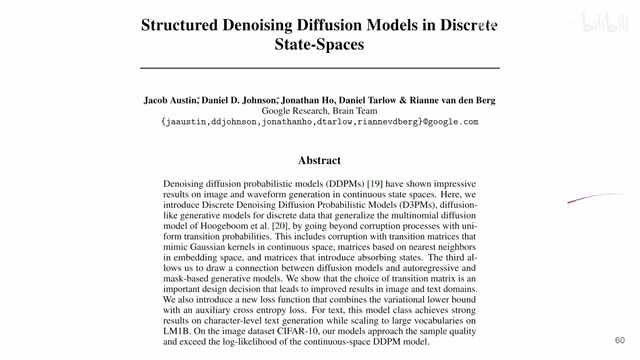
00:00:00–00:00:11 · 画面 001大家好 今天我们来快速说一篇论文 Structure denoising diffusion models in discrete state spaces 这篇论文就是 D3PM 你从标题上来看它就是研究一个离散空间下的 diffusion 的问题是一个很有意思的问题那么我们直接来看
00:00:11–00:00:12 · 画面 002
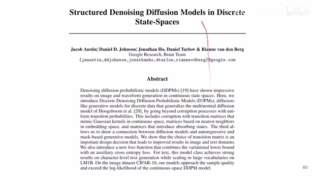
00:00:11–00:00:12 · 画面 00200:00:12–00:00:17 · 画面 003
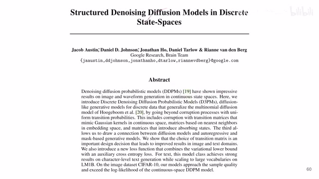
00:00:12–00:00:17 · 画面 00300:00:17–00:01:20 · 画面 004
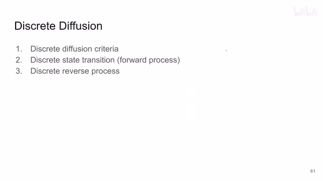
00:00:17–00:01:20 · 画面 004首先为什么我们需要离散的这个 diffusion 其实你想我们在做这个图像的生成的时候图像本质的是一个个的像素像素最终要落到一个个离散的值上同时你甚至要做文本的生成文本的一个个单词对吧它就是离散的这个词那么在我们前面的这个连续的这个 diffusion 的基础上比如说这个最开始那个 diffusion然后到我们之前介绍的这个 DDPM 在这个连续的这个基础上我们要怎么样把它变成离散的呢其实呢你只需要掌握三个地方就可以了第一个就是 diffusion 这个问题的定义就是你从一个最开始的原始数据给它变形变形逐渐变形到一个你想要的这样一个数据这个配置它有一个离散的表述同时呢你在转换的过程中对吧这个形象的过程一个离散变量的不断的转换不断的变形它有一个过程
那当然最重要的还是你从 random noise 逐渐往前解的过程逐渐 denoising 的过程这个反向的这个 diffusion 的过程那同样的它也有一个离散的形式那么下面呢我们就针对这三点逐渐来看那么我们首先来到这个 diffusion 过程的这一些标准啊那么这个式子呢你看过 diffusion 那个视频你应该非常清楚了这个是我们的 negative log likelihood 的 ELBO 也就是 evidence lower bound
00:01:20–00:01:35 · 画面 005
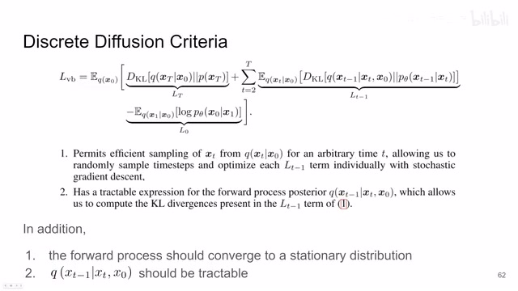
00:01:20–00:01:35 · 画面 005它的 loss 写出来呢是这个形式那其中呢为了高效的训练它呢很重要的两点第一个就是我们的前向过程就是从 x0 到 xt 的过程它呢我们必须要一步的求得那么第二点呢也是很常见的就是我们的这个 kl divergence 它的这个计算当我们画了不同的 diffusion kernel 之后从连续的变成离散了之后你这个 kl divergence 它才能计算只有它能计算了我们才好计算这个 loss
00:01:35–00:01:36 · 画面 006
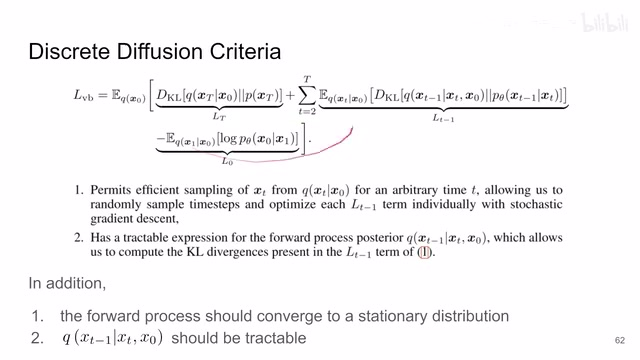
00:01:35–00:01:36 · 画面 00600:01:36–00:01:50 · 画面 007
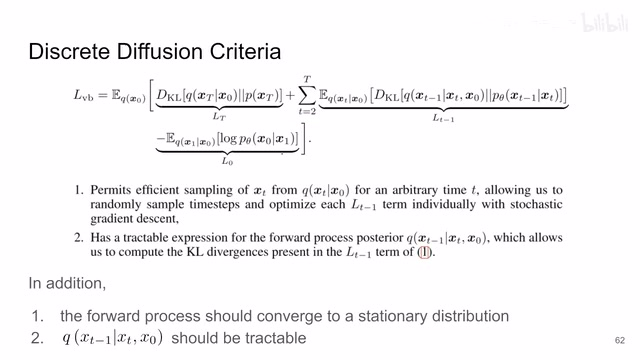
00:01:36–00:01:50 · 画面 00700:01:50–00:01:51 · 画面 008
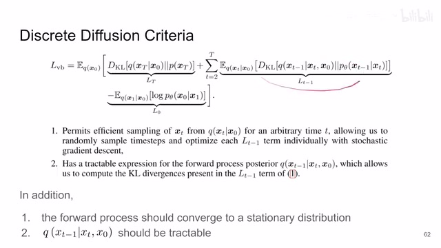
00:01:50–00:01:51 · 画面 00800:01:51–00:02:25 · 画面 009
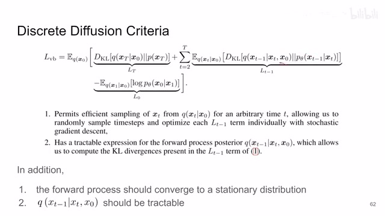
00:01:51–00:02:25 · 画面 009这个是很关键的两点那除此之外呢当然你要说满足一个 diffusion 对吧那么你的前向的过程你不断的去加这个噪声最终它应该是收敛到一个静态的一个你想要的这么一个 distribution 这个是这个 diffusion 的一个常见的 intuition 了那么我们记得把这些要求记在心里下面呢我们就来看怎么样去推这个前向还有反向的过程
00:02:25–00:03:13 · 画面 010
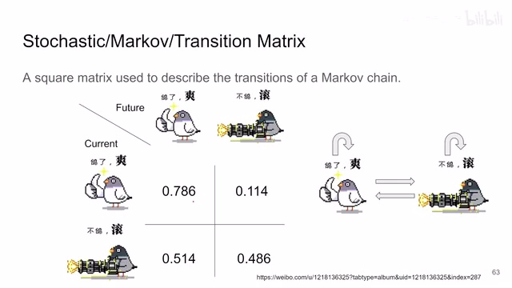
00:02:25–00:03:13 · 画面 010那首先一个前向的过程我们还是回到离散的场合这个我们一开始在介绍 diffusion 的时候介绍马可夫链的时候就说过对吧我们现在呢面对的是一个离散的这个状态空间假设这里呢我们有两个状态从当前时刻的两个状态移动到下一时刻的两个状态那这里不涉及状态空间的变化我们假设状态空间是固定的那这个过程呢我们可以用一个矩阵来表示对吧那么矩阵的这个每行就是当前这个状态转移到下一个状态这个一列它的这个相应的概率那这个就是状态转移矩阵嘛所以你看到我们使用离散状态空间相对于连续状态空间第一个优势就体现出来了我们不需要假定什么高斯性 distribution 或者是什么 distribution 我们直接很直接的你这几个状态到另几个状态直接一个转移矩阵写出来就好了然后我们来看具体的现象过程对于一个离散的随机变量假如说它的状态的空间它有 k 个种类
00:03:13–00:03:26 · 画面 011
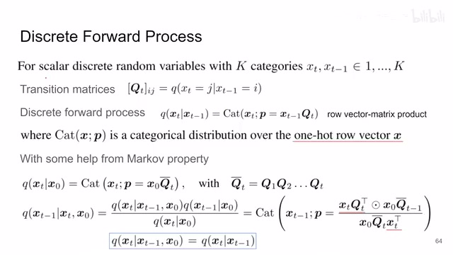
00:03:13–00:03:26 · 画面 011就是你这个 X 呢它从这个 1 到 K 里面去我们刚刚说的这个 Position Matrix 转移矩阵我们假如从 XT-1 时刻到 XT 时刻对吧那转移矩阵怎么写呢你可以看到写成这样子那矩阵的每一个行下标这个 I 这里对应的是前一时刻的就是 XT-1 的时刻的它的各个类从 1 到 K 那么矩阵的每一列这个 J 这个地方就是目标的转移到了这个 XT 时刻的
00:03:26–00:03:27 · 画面 012
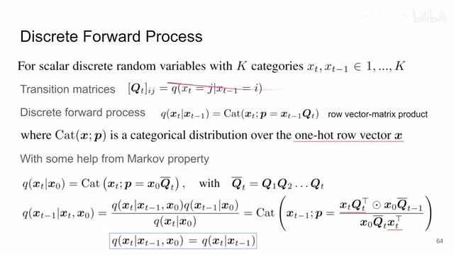
00:03:26–00:03:27 · 画面 01200:03:27–00:03:33 · 画面 013
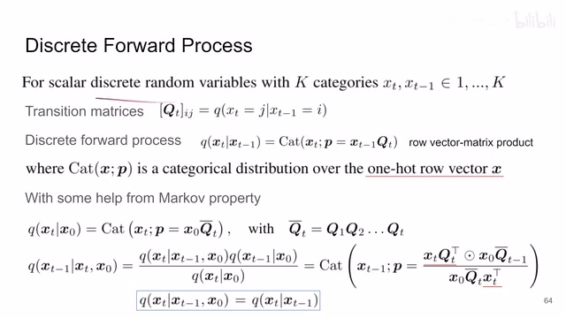
00:03:27–00:03:33 · 画面 01300:03:33–00:03:35 · 画面 014
00:03:33–00:03:35 · 画面 01400:03:35–00:03:52 · 画面 015
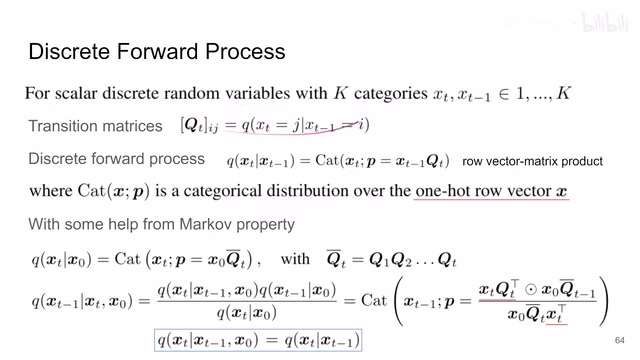
00:03:35–00:03:52 · 画面 015这个状态从 1 到 k 啊，就是我们刚好那个矩阵呢，它的这个数学的一个表达好了。那然后你就可以做前向的转移了，对吧？我们从 xt-1 转移到 xt，它呢就是一个 xt-1 乘上这个 qt 这个矩阵啊。我们定义这个 t 时刻就是 xt-1 到 t 时刻，那注意看呢，这里呢我们使用的是这个行向量乘矩阵的一个形式，也就是 xt-1 呢它是一个行向量。
00:03:52–00:04:24 · 画面 016
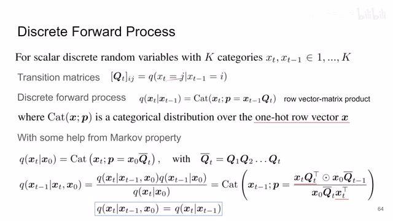
00:03:52–00:04:24 · 画面 016它为什么是一个行向量而不是一个值呢？这里是因为我们是用了这个 one hold encoding，也就是说我的一个 x 进来，我写成一个长度为 k 的这么一个这个行向量，然后这个行向量里面呢只有 x 取的这个值这个地方它等于 1，其他地方都等于 0，这个 one hold encoding 对吧？这个东西的向量乘上我们这个转移的矩阵，那得到了这个。
00:04:24–00:04:25 · 画面 017
00:04:24–00:04:25 · 画面 01700:04:25–00:06:16 · 画面 018
00:04:25–00:06:16 · 画面 018概率的分布呢，就是我们目标的这个 xt 它的这个概率的分布。这里这个 cat 表示就是这个离散的这个状态分布嘛，那么它写成这样一个形式是从 xt 到 xt-1。那么这个是从 xt-1 到 xt。那么有了这个过程，根据我们的马尔科夫性质，我们可以不断往前倒，xt-1 是由谁得出来呢？它是由 xt-2 得出来的，就这样不断往前倒，一直倒都能得到这个 x0。这个很直接，你就不断地把 xt-1 带回到 xt-2xt-3 这样子，不断地迭代下去，最后就写成 x0 的形式。
那么然后我们要写的是这一项 given 和我们求 的概率。为什么要写这一项？因为我们一开始在 ELBO 的时候，它中间有一项是计算 KL divergenceKL divergence 的其中一项就是它，因为 Markov 性质，你可以直接无视 X0，你就把它当成想象成 given 到 就好了。然后我们根据 Bayes 公式一个钥匙翻身把 Xt 和 Xt 交换下位置。
那么这个 fasher 呢，也就意味着你要乘上这个 qxt-1 再除上这个 qxt。这一步到这里都是没有问题的。那么然后我们来看怎么得到右边这个具体的值啊。首先我们来看第一项，这个 givenxt-1qxtx0 呢，Markov 性质对吧？它并不影响这个条件概率具体的值，所以我们直接可以写成这个形式 givenxt-1qxt 那它呢对吧？我们前面一开始。
00:06:16–00:06:18 · 画面 019
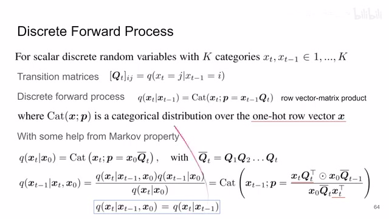
00:06:16–00:06:18 · 画面 019对吧根据这个定义已经有了那就是 xt.1 乘以这个 qt 那等于这个 xt 但是这里我们为什么写成了这样一个形式我们在这个下一页马上就会讲到
00:06:18–00:06:28 · 画面 020
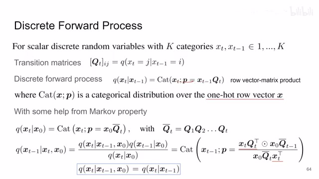
00:06:18–00:06:28 · 画面 02000:06:28–00:06:29 · 画面 021
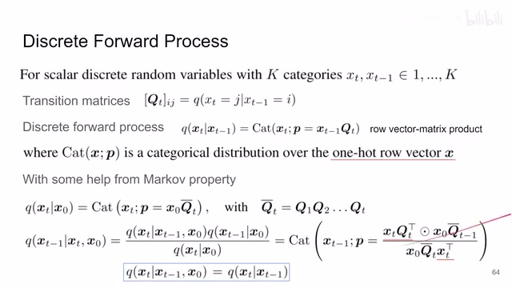
00:06:28–00:06:29 · 画面 021然后呢再看这个 Q 这项从 S0 到 XT-1 那这个好说啊，直接根据前面这个定义啊就直接写出来了，没有什么问题。那还有这个 S0 到 XT 啊，我们根据前面的定义应该写成 X0 乘以这个 QT-这个形式，但是为什么这里还有一个这个 XT 的转制啊？那这一项我们下面呢来看为什么会多了这一项。
00:06:29–00:06:34 · 画面 022
00:06:29–00:06:34 · 画面 02200:06:34–00:06:35 · 画面 023
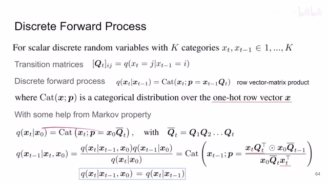
00:06:34–00:06:35 · 画面 02300:06:35–00:06:52 · 画面 024
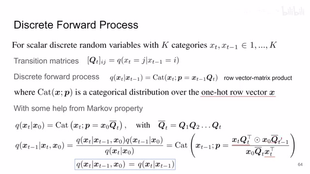
00:06:35–00:06:52 · 画面 02400:06:52–00:08:52 · 画面 025
00:06:52–00:08:52 · 画面 025那这里我们需要明确一个概念，就是当我们给了 xt x0 的时候，我们想要求 xt-1，这里 xt 和 x0 它们都应该是一个具体的这个 1 号的 encoding，也就是说这个 xt 和 x0 它是取到一个特定的具体的值的，而这个 xt-1 呢它是一个这个概率分布的这样一个形式。因为你每一个具体的 x0 或者 xt 它都有可能都有一定的概率转移到任意一个 xt-1。那么下面我们来看在一个正下的过程中这个东西跟我们之前的这个式子没有关系，我们假设说这是另外的一个新的东西，我们假设说已知道 xt-1 我们去求 xt 的过程对吧？它怎么求呢？xt-1 乘以这个矩阵 qt，因为它是 y 号 incoding，实际上它拿的就是这个 qt 里面的。
这一行对吧？求出来那这一行呢是这个 XT 的这个概率。那现在呢我要把它反过来，但是注意呢反过来这个过程中，因为我们知道的是 XT 而不是这个 XT-1，我们要求这个 XT-1，我们知道是 XT 那现在它是被这个 1 号你 coding 给它编码好了了。那我们来看啊，从这边 XT-1 转移到这个 XT 的时候对吧？它是这么个矩阵。
那我们来看这边从 xt.1 到 xt 的时候它是这样正向的转移过来的那现在你反向来我知道了 xt 它取到了具体的某一个值就是对应的这一列里面我怎么知道是哪些 xt.1 转移到这个 xt 来的呢对吧？那我这个时候呢就把这个 qt 给它转制一下对吧？也是乘回来。那这个 transition matrix 转制之后呢，它就很明确的告诉你，你 given 当前的一个状态啊，现在的时刻的一个状态怎么样回到过去的时刻 st-1 的时候啊，它有可能是从 st-1 的哪些时刻给它转移过来的。那这里呢核心你要把握的一件事情就是在这个式子里面，这个 xt 和 x0 是用完好你 coding 给它固定下来的，那这个 xt-1 呢是一个 distribution。
00:08:52–00:10:46 · 画面 026
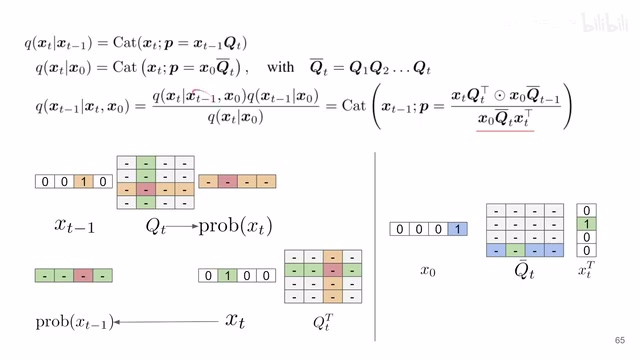
00:08:52–00:10:46 · 画面 026那这个时候呢，我们再来看右边这一项，就是分母这一项。那我们是正常的来讲对吧？我们从 x0 到这个 qt bar，正常来讲出来的应该是这个 xt 的它的一个 distribution。但是现在呢，我们确定好了这个 xt 它就取一个特定的值。所以呢，这个地方的这个 xt 呢，它不是一个 distribution，而是说我 given x0 我要正好取到 xt 的这个特定的这个值它的一个概率。
那具体这个特定的值是多少呢？我们这里 xt 因为是 1 号 encoding 给它写出来的，那它直接在这个 distribution 里面本来它的 distribution 应该长这样嘛，在这个里面找找到这个 1 号 encoding 对应这个位置，也就是绿色的这个位置，找出来这个值呢就是 given x0 到 xt 这个 x0 和 xt 都是具体的一个值，这个时候它这是一个概率，所以这个地方它是一个 scaler 而不是一个 vector，因为我们确定了这个 xt 的值就是其中的某一个值。
比如说长这个样子，或者我们可以换一种方式理解，对于 Qt 来说，首先它的每行相加和都必须是 1，为什么因为它描述的是每一个状态转移到下一个状态时候的概率分布，就是你这个状态转移到下一个状态它总得有一个地方去对吧？所以它是每一行概率是 1，但是这同时意味着它的矩阵的每一列那它的这个和加起来它就不一定是 1 了。那么这个时候怎么样平衡这一列也就是这一项，让它变得也是一个这个 distribution 对吧？让它的和加起来等于是 1 呢？那这个时候呢，你就需要除以下面这一项，你可以把它理解成一个 normalization 的一个过程，让整个的这个式子重新变回来一个这个概率分布，也就是说这是一个行向量嘛，它的和加起来等于 1。
那么经过这一圈呢，我们就把这个 Dissolution 给它写出来了。那么然后呢，我们就可以来到这个反向的过程了。我们回到这个 Loss 啊，我们重点要解决这个 KL Divergence。那这个 KL Divergence 的这一项前向的过程我们刚刚已经解决了，它长这个样子对吧？我们下面呢就来看后面这一项。那有了后面这一项它也是一个离散的概率分布，两个离散的概率分布我要计算它的 KL Divergence，其实是非常简单的。
00:10:46–00:10:47 · 画面 027
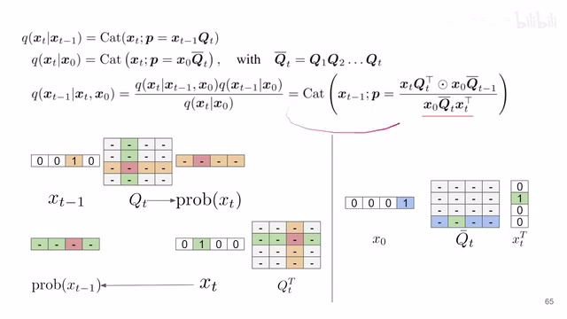
00:10:46–00:10:47 · 画面 02700:10:47–00:10:50 · 画面 028
00:10:47–00:10:50 · 画面 02800:10:50–00:11:19 · 画面 029
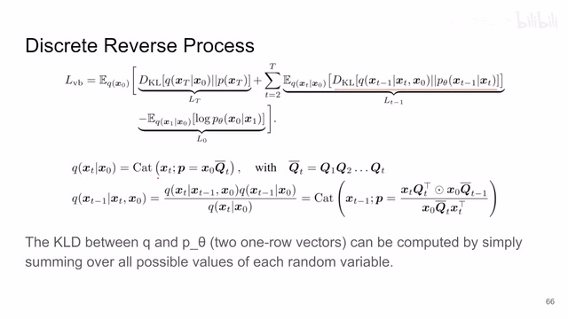
00:10:50–00:11:19 · 画面 029那下面呢，我们就来看右边这个 givenxt 到 xt-1 这个反向的过程应该怎么处理。那这里呢，首先最简单的也是最开始的那篇 diffusion 它使用的处理方法，最简单的一个方法就是你直接用一个网络对吧？givenxt 你要预测 xt-1 对吧？你直接让你的网络预测出来这个值就好了嘛。
00:11:19–00:12:17 · 画面 030
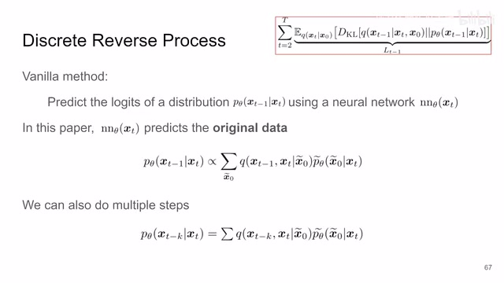
00:11:19–00:12:17 · 画面 030但是呢，在这篇文章里面呢，作者发现说哦，我不要这样预测，这样预测的效果不好。实际上呢，作者预测的是呢，根据这个 xt 他直接预测这个 x0 也就是这个形式，然后因为我们预测的是这个 x0 嘛，但是作者还是想办法把它变成了这个 gamext 的 xt.1 而这个具体的变化呢，我们下一页马上会讲到。那同时呢，作者还说因为我们是预测到 x0 嘛，你可以把这个 x0 当成一个跳板。
你从这个 X0 再去到其他的任何一步，比如说 XT-K 这一步它也是可以计算的。那么这个呢，就是作者的使用的这种设计的这个另一个好处。那下面我们来看具体这个式子是怎么出来的。那么这个部分的推导呢，我参考的是这个链接，感兴趣的朋友呢可以到原文查看。
00:12:17–00:12:19 · 画面 031
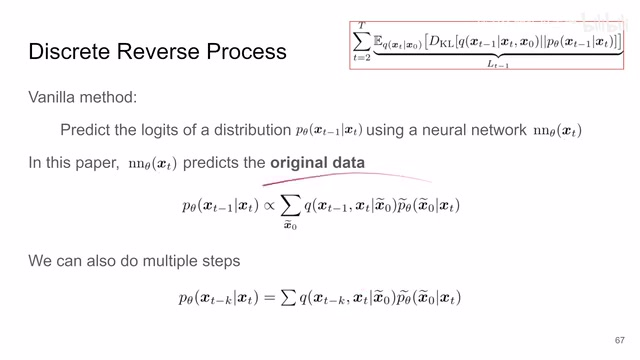
00:12:17–00:12:19 · 画面 03100:12:19–00:12:23 · 画面 032
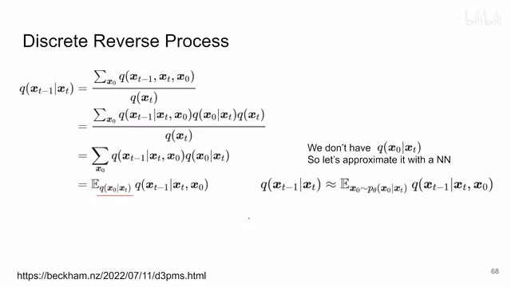
00:12:19–00:12:23 · 画面 03200:12:23–00:12:24 · 画面 033
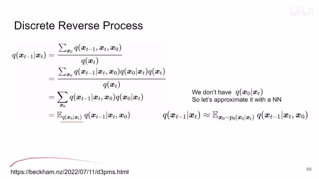
00:12:23–00:12:24 · 画面 03300:12:24–00:13:17 · 画面 034
00:12:24–00:13:17 · 画面 034那么首先呢，我们想要表示的是 given 到，那首先根据条件概率的公式把这个东西展开展成了这个 和 的联合概率除上这个。那这个时候呢，我想把这个引入进来，但是呢，为了跟左边相等对吧？我们要需要把这个加入来之后对进行积分，这样子呢，左右就相等了。那有了这个之后呢，我们就可以做很多骚操作了。我们就可以去凑前面的这个 q given xt 和 x0 来求这个 x 减一凑这一项出来。那这一项呢，也就意味着那为了凑这一项呢，只有意味着我们需要去除 q xt 和 x0 的联合分布。那这个联合分布呢，可以继续的被拆分啊 ，q x0 given xt 然后呢，最后去除上这个 qst 这个 qst 和下面这个 qst 可以直接约掉。
然后剩下的呢就长这个样子，那这个时候呢我们注意到这个 q given xt 到 x0，我们是不知道的，不知道怎么办呢，我们就用一个网络去实际的去求它。那么这个网络呢，就是我们的这个 p θ given xt 到 x0，就是我们的网络。然后呢，你写成一个期望的形式，就长这个样子。
00:13:17–00:13:18 · 画面 035
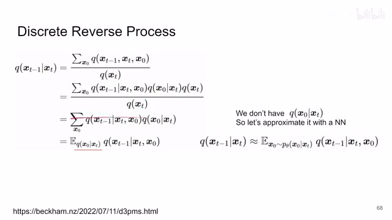
00:13:17–00:13:18 · 画面 03500:13:18–00:13:35 · 画面 036
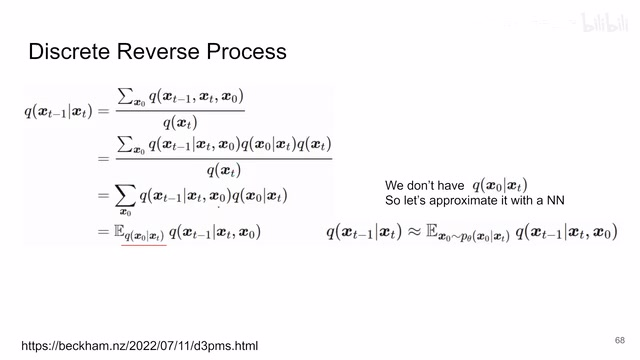
00:13:18–00:13:35 · 画面 03600:13:35–00:13:36 · 画面 037
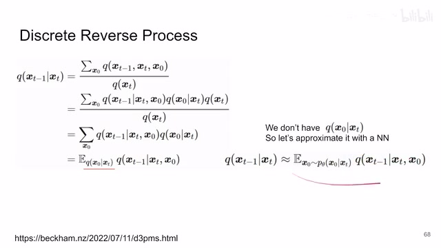
00:13:35–00:13:36 · 画面 03700:13:36–00:13:37 · 画面 038
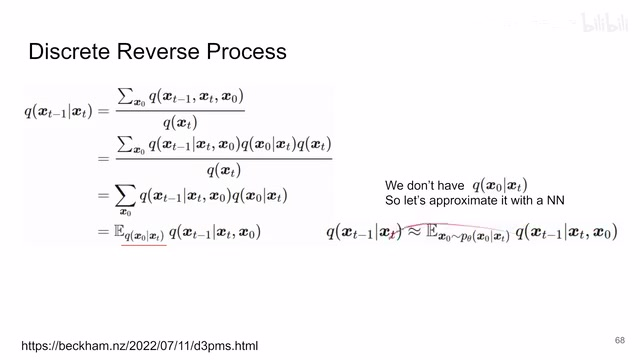
00:13:36–00:13:37 · 画面 038那么然后拿到当前期望的形式，我再根据 Bayes 公式一个钥子翻身 XT-1 和 XT 换一下位置写出来，就是这个样子，因为是马可夫原理对吧，把 X0 去掉。然后我们再看下面分母的部分，因为 XT 和 X0 都是我们确定知道的一个 one-hot encoding，所以下面这个东西它是一个 scaler。具体来说就是我们之前说的写成这个样子的一个形式，因为它本质上的作用就是一个 normalization。
00:13:37–00:14:13 · 画面 039
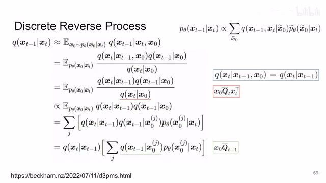
00:13:37–00:14:13 · 画面 039你上面这个离散概率算出来，最后手动给它 normalize 一下就好了，所以下面这一项呢可以拿掉。那这样子呢，这一项呢就变成了正比喻这个式子的写法。那么把这个式子的期望呢打开，具体到 X0 的每一种取值，就是这个 J，你可以看到写成这个样子。那因为这个式子里面呢，这个 QXT-1 到 XT 它跟 X0 是没有任何关系的，所以呢就可以把它拿到这个求和符号外面，就长成了这个样子。
00:14:13–00:14:14 · 画面 040
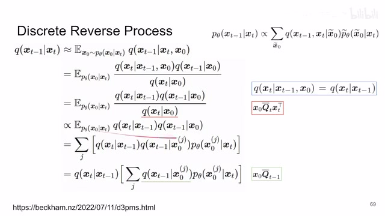
00:14:13–00:14:14 · 画面 04000:14:14–00:14:58 · 画面 041
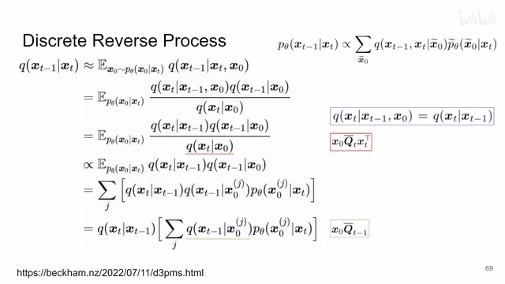
00:14:14–00:14:58 · 画面 041然后呢，我们看这个求和符号里面，对于每一种特定的 x0，我去求 xt.1，是不是非常熟悉？我们一开始推前向过程的时候，对吧，它的写法就是这个样子。然后你如果把这一项和这一项合并，是不是就是这里的这个？我知道一个 x0 之后求 xt.1 和 xt 的这个联合概率分布。那么这个推导呢，就解释了为什么原论文中写成了这样一个式子，这样一个正比的关系。
00:14:58–00:15:00 · 画面 042
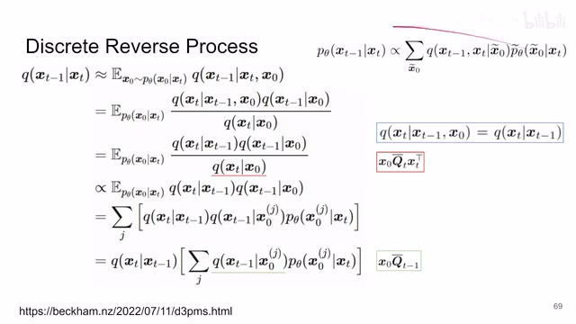
00:14:58–00:15:00 · 画面 04200:15:00–00:15:12 · 画面 043
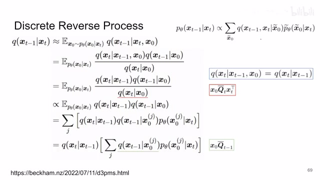
00:15:00–00:15:12 · 画面 043而实际写代码呢，你参考这个部分，你的网络推断出一个 x0 之后，对于 x0 中的每一个可能，你算一个这个 x0 乘以 qt-1，再乘以前面这项是这个 xt 乘以这个矩阵这个 t 它的转制。那为什么这么写，因为我们前面说了，因为 xt 它是一个确定的值。
00:15:12–00:15:21 · 画面 044
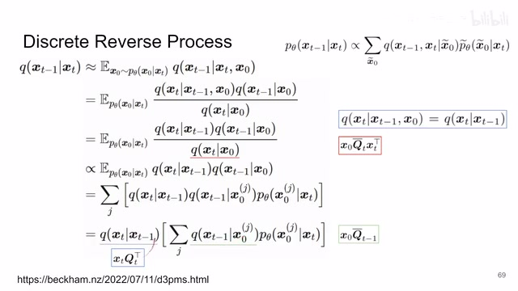
00:15:12–00:15:21 · 画面 044那么这样子呢，你就可以把这个反向的过程给它建立起来了。那么下面有了具体的前向的过程，有了反向的过程，我们只需要选择一下我们这个 transition matrix 也就是这个 Q 它就可以了。那 Q 的选择呢，首先有两点要求，第一个就是它的每一行首先加起来都是等于 1，因为你每一个状态总要有一个去路嘛对吧，这是我们之前说的。那第二点呢，就是这个 QT2 也就是很多个 QT 乘起来之后呢它
00:15:21–00:15:22 · 画面 045
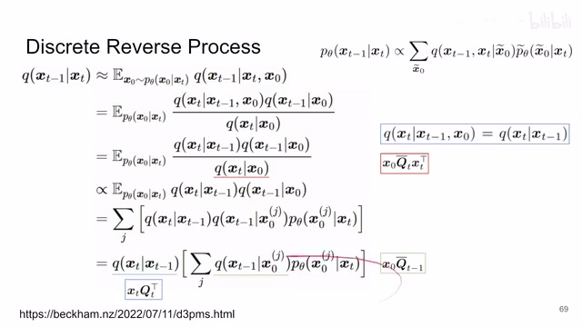
00:15:21–00:15:22 · 画面 04500:15:22–00:15:25 · 画面 046
00:15:22–00:15:25 · 画面 04600:15:25–00:16:38 · 画面 047
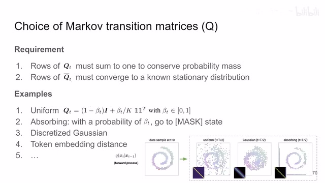
00:15:25–00:16:38 · 画面 047必须收敛到一个静态的分布，也就是说这是我最终想要的一个好的 distribution。那么在这两条元素情况下，作者探讨了很多种，比如说像 uniform 它就很像 reinforcement learning 里面的 ipsum greedy，你如果不知道我在说什么也无所谓，你看它就是给一个 beta t 的一个概率有很大的程度下它就是保持原来这个值不变，那么只有在 beta t 很小一个概率情况下它会均匀的转移到其他的状态。
这个是 uniform，还有这个 absorbing 那就是有一个很小的概率 beta t 让当前的这个状态直接跳到这个 mask 这个状态，也就是你看这里啊那就是最右边最后一个状态，那叫做这个 mask 这个状态，所有的状态有大概率保持不变，一旦变呢就直接跳到这个最后的这个状态。那么当然呢，高斯也是存在的，只不过这次呢你要换成离散的形式给它离散化。
00:16:38–00:16:39 · 画面 048
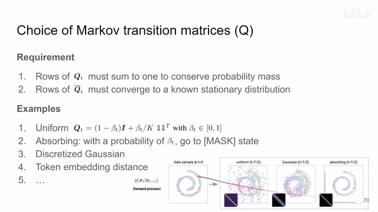
00:16:38–00:16:39 · 画面 04800:16:39–00:16:52 · 画面 049
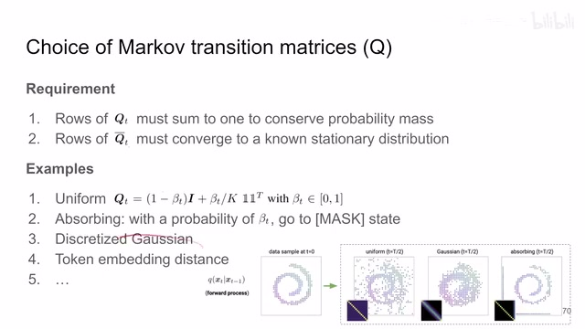
00:16:39–00:16:52 · 画面 049那么然后做着还设什么 token embedding distance 什么这种东西，那感兴趣的朋友呢你可以详细的到他附录里面去看他具体的这个配置。那么解决完这个转移矩阵，我们来看到这个 beta diffusion rate，它就是你怎么样 schedule 这个 beta，就是你人工定义这个 beta t 它的这个值。比如说针对这个 uniform distribution 做的是了这个 cosine scheduling 和这个 linear scheduling 对吧，他们发现这个 cosine 可能 work 的更好一点，像 absorb 这种的它用的是这个 scheduler，然后 gaussian distribution 它用的是跟 ddpm 一样的这个 linear schedule。
00:16:52–00:16:53 · 画面 050
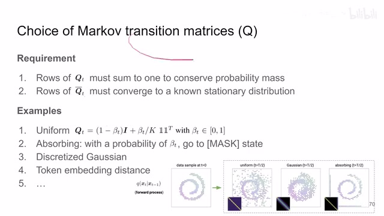
00:16:52–00:16:53 · 画面 05000:16:53–00:16:55 · 画面 051
00:16:53–00:16:55 · 画面 05100:16:55–00:17:15 · 画面 052
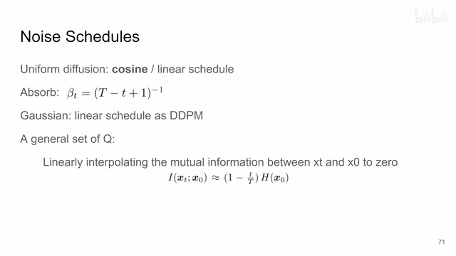
00:16:55–00:17:15 · 画面 05200:17:15–00:17:16 · 画面 053
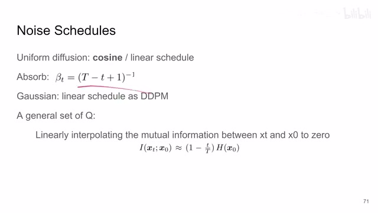
00:17:15–00:17:16 · 画面 05300:17:16–00:17:28 · 画面 054
00:17:16–00:17:28 · 画面 054等等等等这些呢，感兴趣的朋友呢你可以集体的去看他的代码，那么这些呢就是都是不同的设计方案了，看你最后想要哪一种，看最后哪一种效果好就是了。
00:17:28–00:18:25 · 画面 055
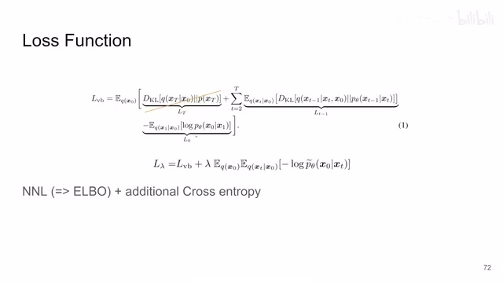
00:17:28–00:18:25 · 画面 055那么最后呢，我们来看到这个 loss function，首先是这个 elbo，就是我们这一项是一个常数，剩下的这两项，这一项 l0 为什么我们留下，因为我们还是在处理一个离散的问题，离散的问题呢，你就可以实际的去计算这个 log 这个东西，所以呢，它也是留下，当然在代码中呢，也就是你在从 1 到这个 t 不断的先均匀的采样采出一个值来然后去生成相应的 xt，如果你的 t 在 2 到 t 的范围里，就是如果你的 t 不等于 1，那么你就用 kl divergence loss 直接用，如果你的 t 正好等于 1，你就写这个东西，实际上就是一个 cross entropy，你让你的 given x1 到 x0 预测出来的结果跟 x0 实际上是一致的就可以了
这个呢是这个 ELBO，那么此外呢，作者还发现，我如果额外的添加一个 loss，它可以给我们更好的效果，就是额外的加上 cross entropy，就是我们之前说的，我们的模型是根据这个 XT 直接预测 X0 的，那我可以直接用这个 X0 作为监督信号对吧，我直接让它预测的准一点就好了嘛，那么作者发现呢，额外的加上这样一个 cross entropy 之后呢，能够取得更好的效果，那么这样子呢，就构成了本文的这个最终的 loss 的形式
00:18:25–00:18:26 · 画面 056
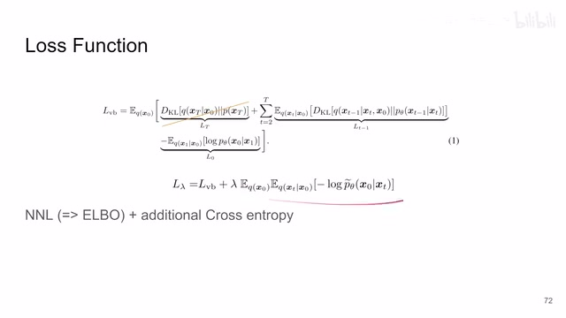
00:18:25–00:18:26 · 画面 05600:18:26–00:18:39 · 画面 057
00:18:26–00:18:39 · 画面 05700:18:39–00:18:40 · 画面 058
00:18:39–00:18:40 · 画面 05800:18:40–00:18:44 · 画面 059
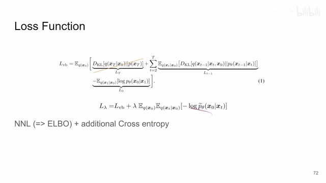
00:18:40–00:18:44 · 画面 05900:18:44–00:18:55 · 画面 060
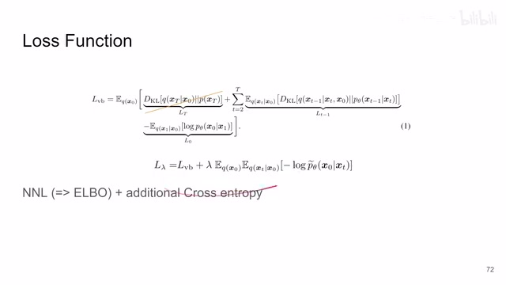
00:18:44–00:18:55 · 画面 060那么以上就是本文的主要技术细节了，我们把连续的 diffusion 变成离散之后，它给我们带来很多挑战，同时也给我们计算 loss 这些东西带来很多便利性，那么最后关于实验的部分，作者试了比如说文本的生成，图像的生成，感兴趣的朋友你可以到这个地址看一下它的代码，总的来说，这一篇是一个非常有趣的工作，那么以上就是我对这个论文的一个快速的整理，那么感谢您的收看，再见
00:18:55–00:18:56 · 画面 061
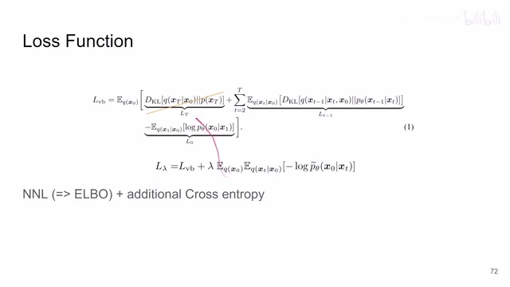
00:18:55–00:18:56 · 画面 06100:18:56–00:18:59 · 画面 062
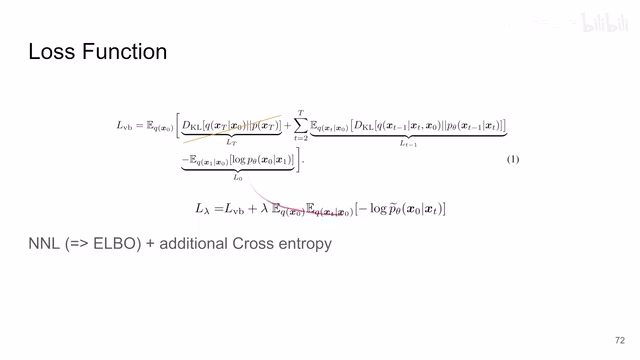
00:18:56–00:18:59 · 画面 06200:18:59–00:19:05 · 画面 063
00:18:59–00:19:05 · 画面 06300:19:05–00:19:07 · 画面 064
00:19:05–00:19:07 · 画面 06400:19:07–00:19:16 · 画面 065
00:19:07–00:19:16 · 画面 065转写与来源说明 · 0 个自动复核提示
保留 49 个原始语音片段，0 个片段触发自动复核提示。提示仅用于定位可能的术语、重复或识别问题，不等于已确认错误。
讲解画面为源视频截图（640×360），不是可编辑 PPT 文件。全片按每秒 2 帧扫描内容变化，逐步展开页保留；连续动画保留代表画面。清晰度受源视频限制。
原视频：paper/合集_2026-10-16_内容生成/[论文速览]Structured Denoising Diffusion Models in Discrete State-Spaces[2107.03006].mp4
SHA-256：f87e50c55d5e717fcd9b3d8f0ca3490dcbc01945347321f910e83868954e4a5e
全文按视频语音与画面制作。原论文可从上方链接下载；完整资料包保留全文、原始逐字稿、字幕和校对记录。